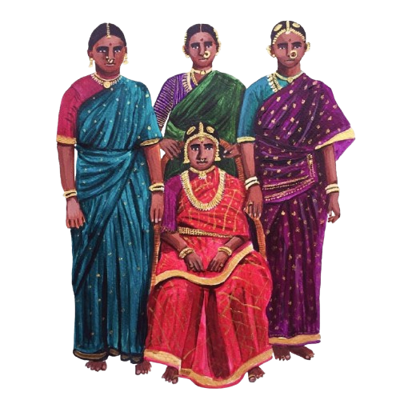

In Pakistan, the most powerful art isn't hung on walls—it is worn, driven, and sung with a passion that saturates the very air. It's a culture where creativity is a public spectacle, a personal identity, and a spiritual release, all at once.
Growing up in South Asia, these pieces of art have been an everyday thing for me, however I wanted to present the colors of Pakistan in this little zine.
